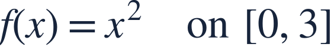
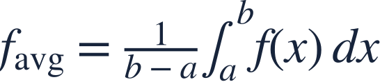
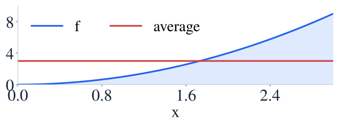
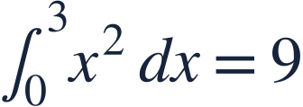
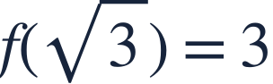
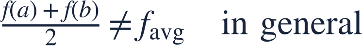

Average value of a function
함수의 평균값

A function’s average value is accumulated height divided by interval length.
함수의 평균값은 누적된 높이를 구간 길이로 나눈 값입니다.

A function’s average value is accumulated height divided by interval length.
함수의 평균값은 누적된 높이를 구간 길이로 나눈 값입니다.

Average function value and average rate of change are different quantities.
함수의 평균값과 평균변화율은 서로 다른 양입니다.

A rectangle at the average height has the same signed area as the original graph.
평균 높이의 직사각형은 원래 그래프와 같은 부호 있는 넓이를 가집니다.

First find the total accumulated height.
먼저 높이를 누적한 정적분을 구합니다.
Divide by the interval length, not by the number of endpoints.
끝점의 개수가 아니라 구간 길이로 나눕니다.

Continuity ensures an input attaining the average; here it is √3.
연속성이 평균값을 갖는 점을 보장하며 여기서는 √3입니다.

Averaging only the endpoint heights does not usually give the function’s average value.
끝점의 높이만 평균 낸 값은 일반적으로 함수의 평균값이 아닙니다.
Find the average value.
함수의 평균값을 구하세요.